Блог клиники
Понятные статьи о лечении, профилактике и уходе за зубами — от врачей нашей клиники. Без сложных терминов и навязывания.
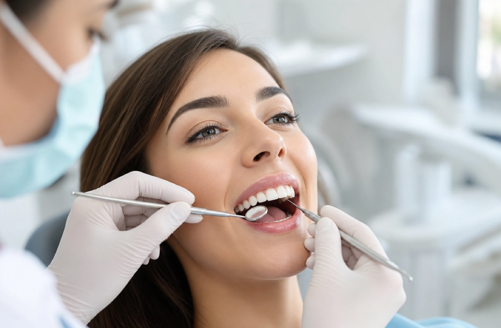
Кариес: первые признаки и как распознать на ранней стадии
Как вовремя заметить кариес и не довести до боли: первые признаки и стадии по шагам.
Читать статью →Отбеливание зубов: какие методы работают и безопасно ли это
Какие методы отбеливания реально работают, безопасны ли они для эмали и сколько держится результат.
Читать статью →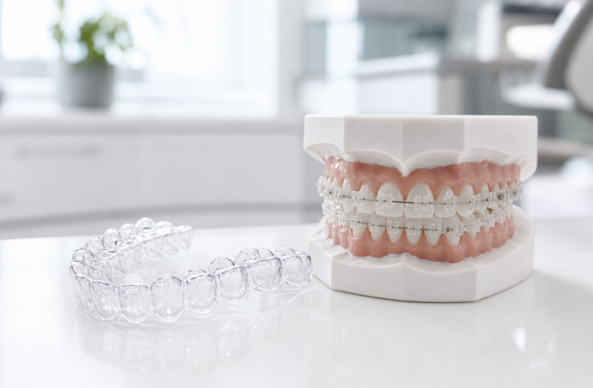
Брекеты или элайнеры: что выбрать для исправления прикуса
Чем отличаются брекеты и элайнеры, что комфортнее и кому что подходит — честное сравнение.
Читать статью →
Имплантация зубов: как проходит, сколько длится и больно ли это
Разбираем этапы имплантации по шагам — от диагностики до коронки, сроки приживления и что влияет на результат.
Читать статью →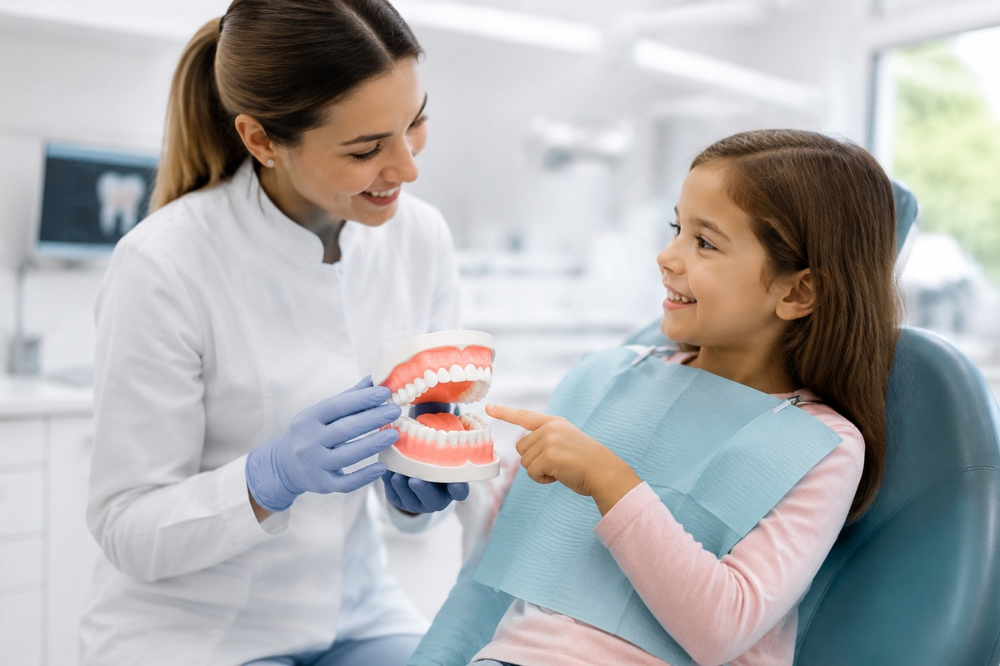
Первый визит ребёнка к стоматологу: когда идти и как подготовить
Когда вести ребёнка к стоматологу впервые и как подготовить, чтобы визит прошёл спокойно.
Читать статью →Кровоточивость дёсен: почему появляется и что делать
Почему кровоточат дёсны, что это значит и как остановить воспаление, пока оно не зашло далеко.
Читать статью →Чувствительность зубов: почему ноют от холодного и как помочь
Почему зубы ноют от холодного и сладкого и как снизить чувствительность — разбор причин.
Читать статью →
Профессиональная гигиена: зачем нужна и как часто делать
Почему домашней чистки недостаточно, как проходит профгигиена и как она помогает сэкономить на лечении кариеса.
Читать статью →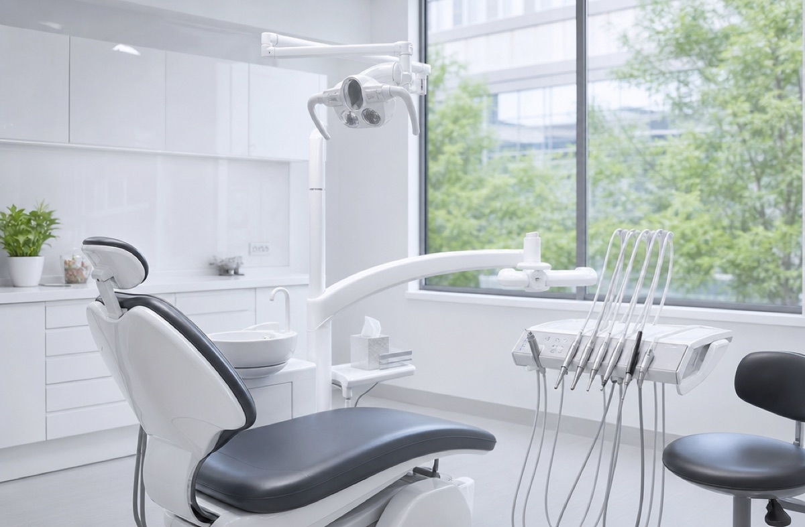
Удаление зуба: когда необходимо и как быстро восстановиться
Когда зуб нужно удалять, как проходит процедура и как быстро восстановиться без осложнений.
Читать статью →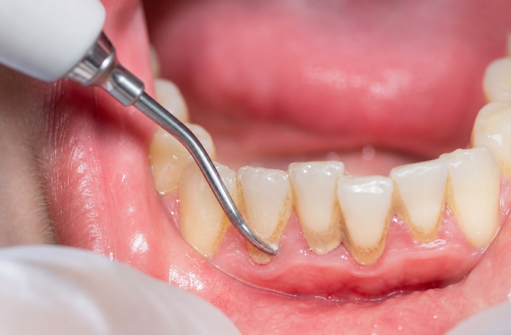
Зубной камень: откуда берётся и чем он опасен
Откуда берётся зубной камень, чем он опасен и почему убрать его можно только у стоматолога.
Читать статью →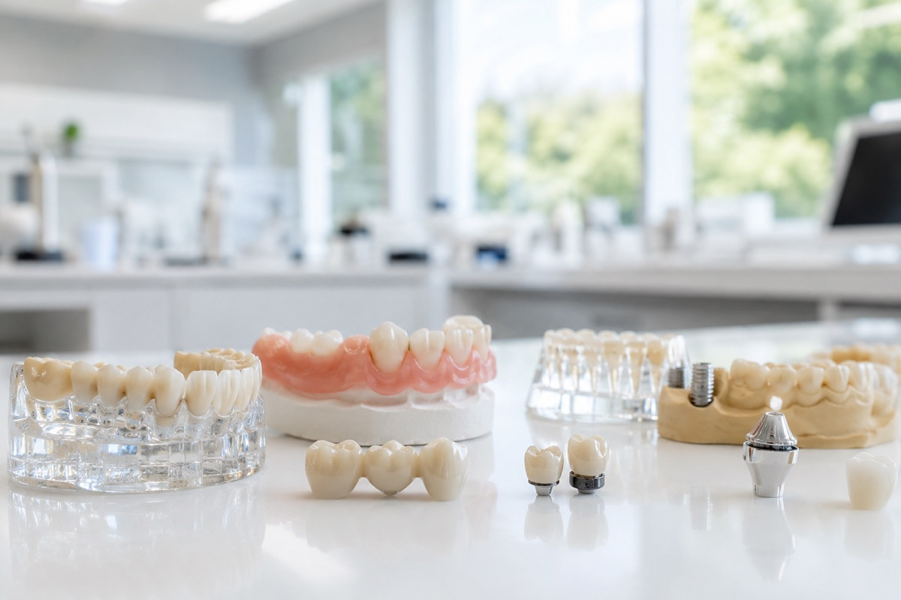
Виды зубных протезов: какой выбрать и чем они отличаются
Какие бывают зубные протезы и чем отличаются — понятный разбор всех вариантов восстановления зубов.
Читать статью →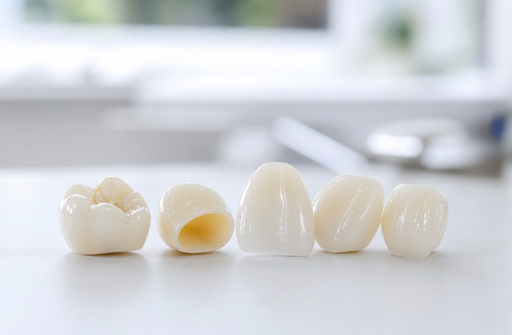
Зубные коронки: из чего делают и сколько они служат
Из чего делают зубные коронки, чем отличаются материалы и сколько они служат — разбор для пациента.
Читать статью →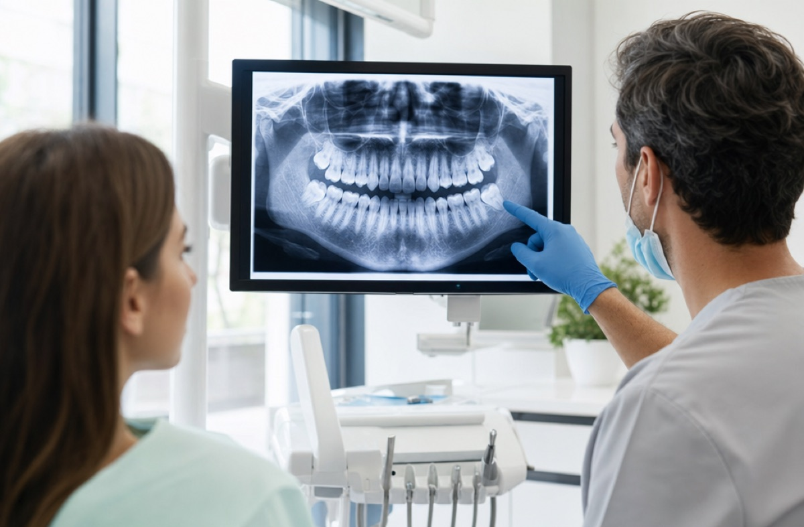
Зубы мудрости: удалять или оставить
Когда зуб мудрости нужно удалять, а когда можно оставить — разбираем без лишней драмы.
Читать статью →
Как выбрать стоматологию: 7 признаков клиники, которой можно доверять
На что обратить внимание перед записью: лицензия, оборудование, врачи, гарантия и прозрачные цены.
Читать статью →Фторирование и реминерализация: как укрепить эмаль
Как фторирование и реминерализация укрепляют эмаль и защищают зубы от кариеса.
Читать статью →Неприятный запах изо рта: причины и как избавиться
Почему появляется неприятный запах изо рта и как от него избавиться — стоматологические и другие причины.
Читать статью →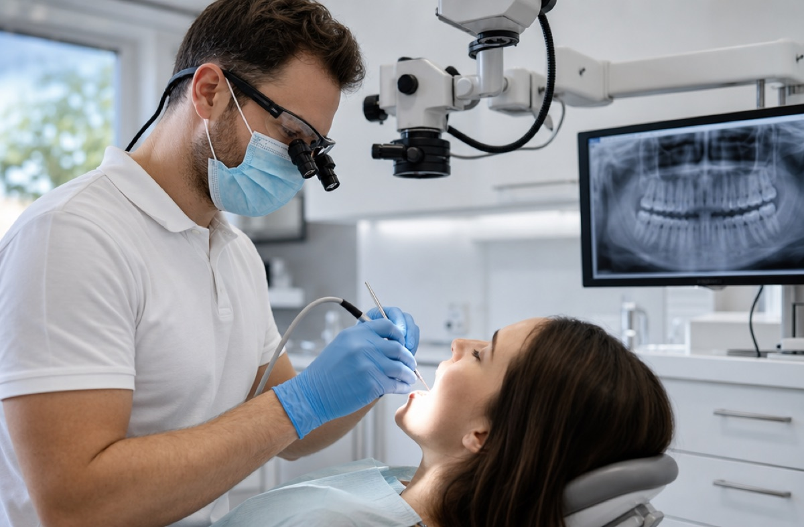
Пульпит и лечение каналов: что это и больно ли
Что такое пульпит, как лечат каналы зуба и больно ли это — отвечаем на главные страхи пациентов.
Читать статью →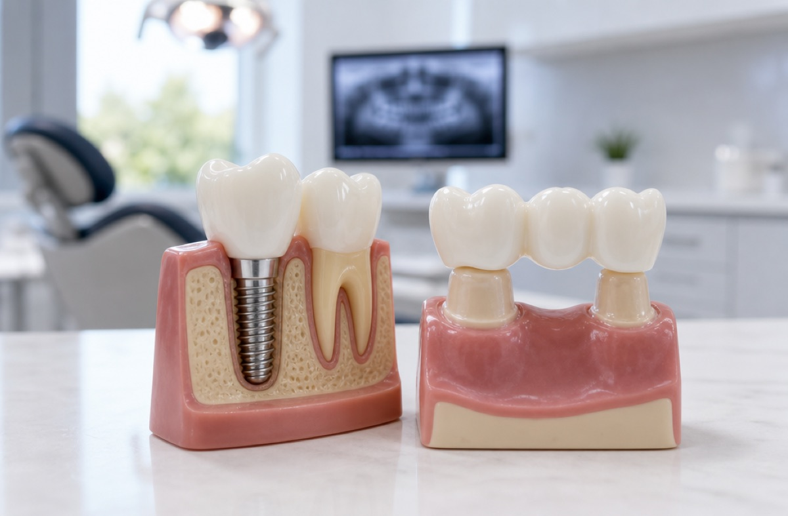
Имплант или мост: что выбрать при потере зуба
Имплант или мост при потере зуба — честное сравнение по надёжности, цене и сроку службы.
Читать статью →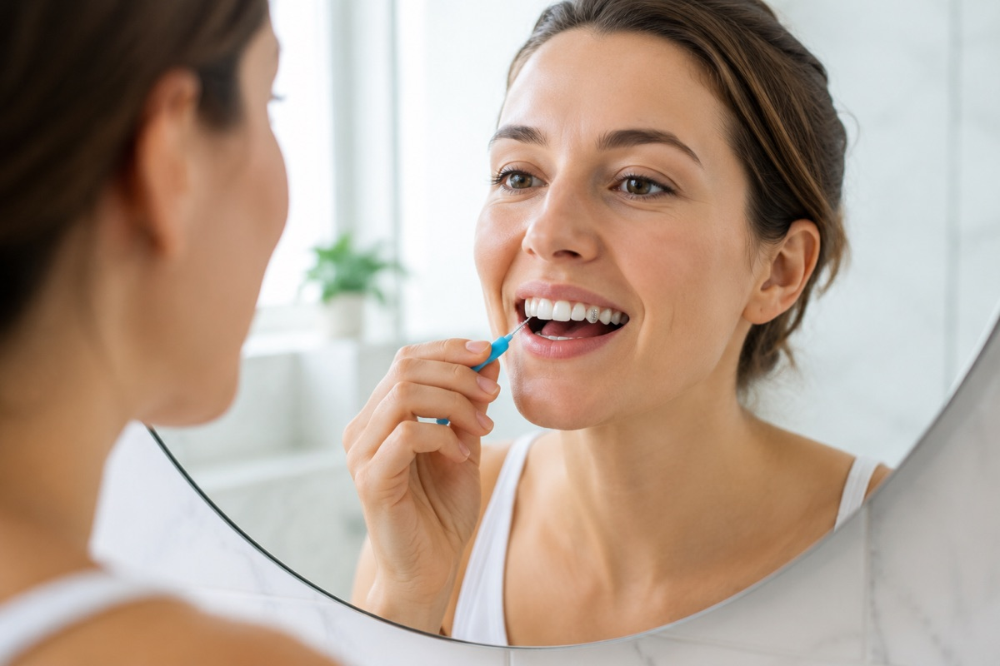
Уход за имплантами: как продлить срок службы
Как ухаживать за имплантами, чтобы они служили десятилетиями, и как избежать периимплантита.
Читать статью →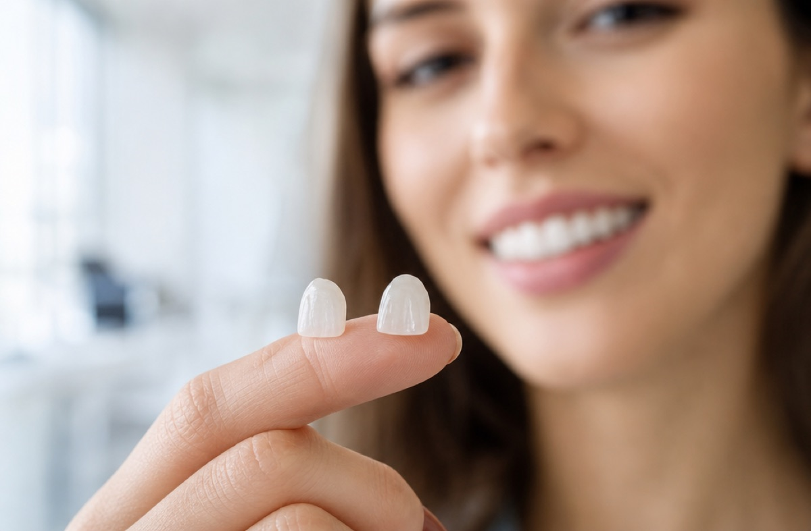
Виниры: кому подходят и как проходит установка
Что такое виниры, кому они подходят и как проходит установка — разбор для красивой улыбки.
Читать статью →Лечение зубов при беременности: что можно и когда
Можно ли лечить зубы при беременности, безопасны ли анестезия и снимки и в каком триместре лучше.
Читать статью →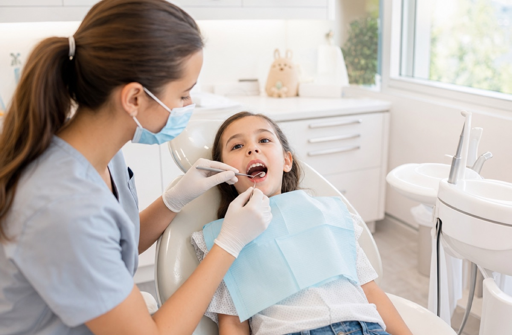
Кариес молочных зубов: лечить или ждать смены
Нужно ли лечить кариес молочных зубов или ждать смены — отвечает детский стоматолог.
Читать статью →Как побороть страх стоматолога: 8 рабочих способов
Откуда берётся страх стоматолога и 8 рабочих способов справиться с дентофобией.
Читать статью →Остались вопросы о лечении?
Запишитесь на консультацию — врач осмотрит полость рта и составит понятный план с этапами и стоимостью.